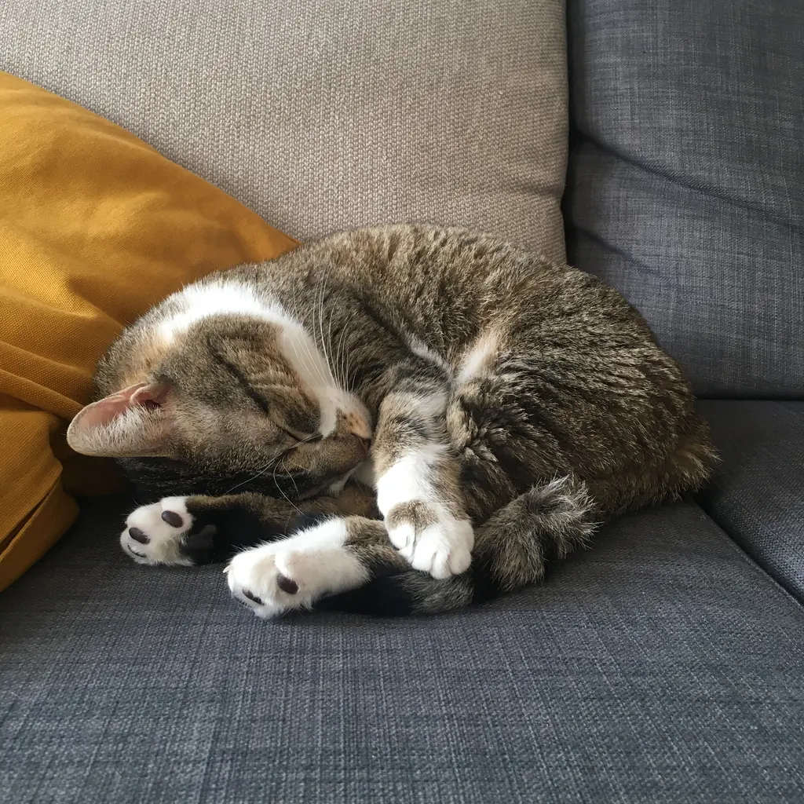

FreeCat
Pet
Cat atlas
Identify
Cat album
Cat care
Play
Night
中文
Stay a little.

Real photo · Milo · Sonkiki
CC BY-SA 4.0 ↗
Loading cat / 正在加载猫咪…
Enable JavaScript to pet the cat. / 启用 JavaScript 后即可抚摸猫咪。
Enable purr
Another cat
More
Choose your photo
Reset movement
Original cat
Classic cat · 8 coats
Photos stay on your device. Real photos & AI virtual cats are always labeled separately.
Local synthesized purr
Purr: Ariadne · Sgerbic · MP3
·
CC BY-SA 3.0
Milo: Sonkiki
·
CC BY-SA 4.0 / CC0
·
Linen: E.-J. Leusink (CC0)
·
Siam: Gzzz (CC BY-SA 4.0)